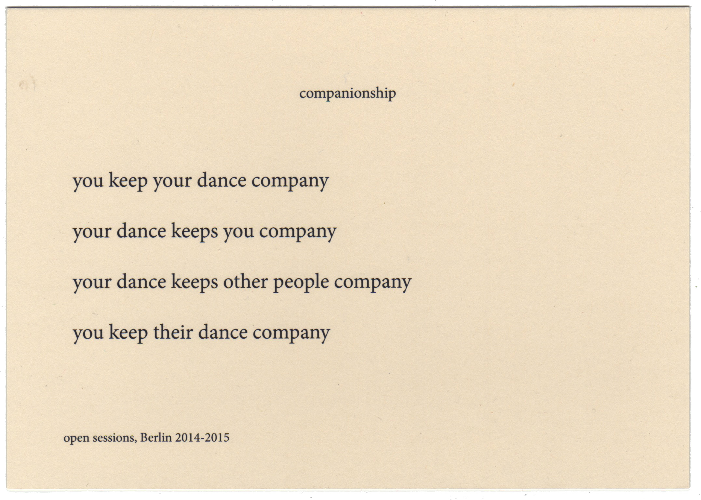

Dance of Companionship 2014 
I have been developing, dancing and guiding people through the dance of companionship since 2014. It is a guided dance framed by a text, and it also involves writing poems. The text weaves together propositions for dance and narrative fragments about forms of togetherness. It is a practice of being-with: with dance, with oneself, with each other, in attentive and intimate distance. As we focus with ever more detail on the present events, dance – our companion – continuously moves away as that which exceeds the dancer’s own doings. It is a horizon and a companion; a partner that remains unknown, whose unknowability obliges and displaces. The Dance of Companionship is part of the collection of dance scores that feed my Togethering project. |